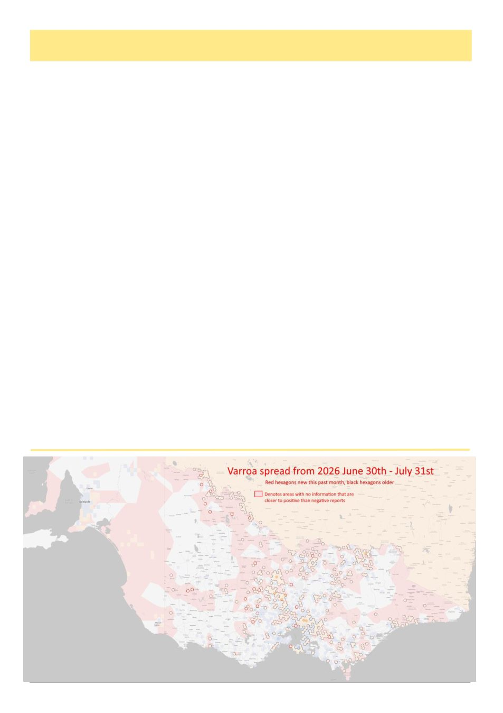

August 2026
29
The Hidden Barrier To Varroa Control
By Nathan Whitford
Over the past month, I‘ve found myself doing something I never expected when I first stepped into the role of
President of the Geelong Beekeepers Club: lobbying. Not in the political sense, but in the practical, beekeeper
style way. Seeing a problem, naming it, and trying to fix it before it becomes a bigger one.
The issue is simple, most varroa treatments available under emergency permits are supplied in larger pack siz-
es, even though the majority of Victorian beekeepers are hobbyists. In our club alone:
•
62% of members run fewer than 10 hives
•
25% have just one hive
Yet many treatments are packaged for operators with dozens or hundreds of colonies. Some examples:
•
Formic Pro: available in 2 treatment or 10 treatment packs (enough for 10 hives)
•
Bayvarol: 20 strip (enough for 5 hives) or 800 strips
•
Apistan: 10 strips (enough for 5 hives)
•
Apivar: 10 strips (enough for 5 hives)
•
Apiguard: 10 trays (enough for 5 hives)
•
Api bioxal: 350g pack treating up to 100 hives
•
And then there is Aluen CAP, supplied only as a 60-strip carton to treat 15 hives, with two strict conditions
under PER95790:
○
―Discard unused strips 24 hours after first opening the pouch.‖
○
―It is illegal to sell individual strips separately.‖
For a beekeeper treating one or two hives, this means opening a pack, using a handful of strips, and discarding
the rest. It‘s financially unreasonable, environmentally wasteful, and it risks pushing people toward unsafe worka-
rounds like storing opened strips or informally sharing partially used packs, both of which undermine treatment
efficacy and increase the risk of resistance.
That said, let‘s be realistic: sharing packs within local zones is probably the only practical option we have right
now, and it‘s something we will likely encourage. But it‘s not as simple as it sounds. Coordinating treatments
across our member zones means juggling a lot of moving parts, hive thresholds, weather windows, beekeeper
availability, and the 24-hour discard rule for some treatments. Will my hives be at threshold when yours are? Can
we get enough beekeepers ready to treat on the same day? Can we physically open a box, have members collect
their strips, and get everyone treating within the required timeframe? It‘s possible, but it‘s a complex dance, and it
highlights exactly why a smaller, sealed pack size would make such a difference for hobbyists. Resistance is not
hypothetical. We already have documented resistance in Australia to popular treatments like Bayvarol, which is
exactly why Aluen CAP is viewed by many as a much-needed alternative. Smaller, practical pack sizes would
help prevent beekeepers from storing opened strips, losing potency, and unintentionally under dosing mites. But
even the best alternative only works if people can actually use it.
So, on behalf of the Geelong Beekeeper Club, I reached out to Agriculture Victoria, the VAA (Victorian Apia-
(Continued on page 30)